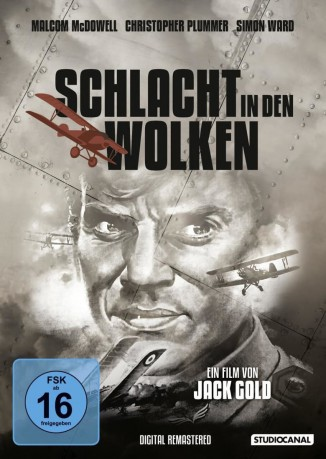

#10381 Schlacht in den Wolken
Alternativ: Aces High (Englischer Titel)
 
 IMDB-Wertung: 6.6 / 10
IMDB-Wertung: 6.6 / 10  Metascore: 0
Metascore: 0 
"Schlacht in den Wolken" – ein Klassiker unter den Kriegsfilmen – basiert auf R.C. Sheriff’s „Journey’s End“ und dem autobiografischen Roman „Sagittarius Rising“ von Cecil Lewis und versammelt ein berühmtes Schauspielerensemble um Malcolm McDowell, Christopher Plummer und Simon Ward. Regisseur Jack Golds Adaption folgt der Geschichte um einen naiven, jungen College-Absolventen im 1. Weltkrieg. Angekommen an der Westfront, ist der Fliegeroffizier bereit für den Luftkampf gegen die Deutschen.
Jahr: 1976
Dauer: 114 Minuten
FSK: 12
Land: England Studio: Scotia International FilmverleihTonspuren:
Untertitel: Deutsch,
Auflösung: 1080p (1808x1080) Größe: 10076 MB
Genre: Action, Drama, Krieg
Regisseur: Jack Gold
Drehbuch: Howard Barker, R.C. Sherriff, Cecil Lewis
Soundtrack: Richard Hartley
Darsteller:
 Malcolm McDowell als Gresham
Malcolm McDowell als Gresham Christopher Plummer als Sinclair
Christopher Plummer als Sinclair Simon Ward als Crawford
Simon Ward als Crawford Peter Firth als Croft
Peter Firth als Croft- David Wood als Thompson
 John Gielgud als Headmaster
John Gielgud als Headmaster Trevor Howard als Silkin
Trevor Howard als Silkin Richard Johnson als Colonel Lyle
Richard Johnson als Colonel Lyle Ray Milland als Brigadier Whale
Ray Milland als Brigadier Whale- David Daker als Bennett
 Barry Jackson als Joyce
Barry Jackson als Joyce Tim Pigott-Smith als Stoppard
Tim Pigott-Smith als Stoppard- John Serret als French Colonel
- Penny Irving als French Girl
- James Walsh als Gresham's Batman
- Christopher Blake als Roberts
- Gilles Béhat als Beckenauer
- Elliott Cooper als Wade
- Jacques Maury als Ponnelle
- Ron Pember als Eliot
- Jeanne Patou als French Singer
- Pascale Christophe als Croft's Girl Friend
- Gerard Paquis als French Officer
- Jean Driant als Corporal - Dressing Station
- Judy Buxton als French Girl
- Tricia Newby als French Girl
- Roland Viner als Officer
- Steven Pacey als Officer
- Kim Lotis als Officer
- Colin Rix als Sergeant
- Jane Anthony als Katherine
- Evelyn Cordeau als French Girl
- Paul Henley als Replacement
- Paul Rosebury als Replacement
- David Arnold als Replacement
- James Cormack als School Captain
Datei: X:\1976\Schlacht in den Wolken (1976, FSK12, 1808x1080).mkv seit 02.01.2019
Festplatte: HD 1971-1979
 Es gibt insgesamt 31 Filme in der Gruppe '1976'
Es gibt insgesamt 31 Filme in der Gruppe '1976'